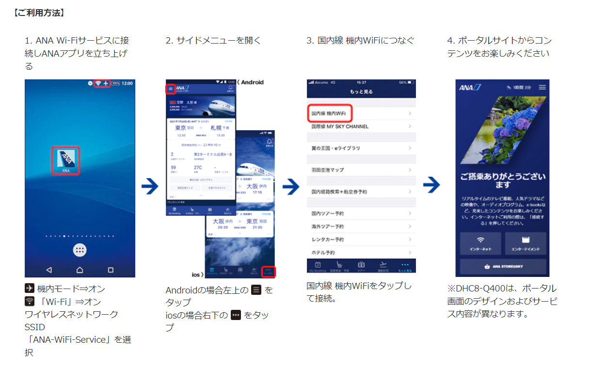

2022/03/04
1. 家から熊本空港までのルート
- ルート1(採用)
- 南熊本→肥後大津→熊本空港
電車→肥後ライナー - ルート2
- 食糧事務所→味噌天神→空港
都市バス→高速バス
- 食糧事務所→味噌天神→空港
- 南熊本→肥後大津→熊本空港
| ルート名 | ルート概要 | 時間 | お金(一人) | 時刻表 | 支払い方法 |
|---|---|---|---|---|---|
| ルート1 | 南熊本→肥後大津 (豊肥本線) |
9:26-9:53 | ¥400 | link | suica |
| ルート1 | 肥後大津→熊本空港 (肥後ライナー) |
10:00-10:15 | - | link | - |
| ルート2 | 食糧事務所→味噌天神 (都市バス) |
8:40-8:53 | ¥200 | link | suica |
| ルート2 | 味噌天神→熊本空港 (空港リムジンバス) |
9:15-9:53 | ¥650 | link | suica |
ルート1の採用理由について
- お金が安い
- 早い
2. 熊本空港→羽田空港
- 便名
- ANA 644
- 時間
- 熊本(11:00) - 東京(羽田)(12:30)
- 座席
- 14A(妻)、14B(夫)
- 予約番号
- 0107
- 到着口
- 第2ターミナル
- 搭乗手順
- 2次元バーコードの取得
- 夫取得済み
- 嫁追加依頼済み
- Walletアプリに追加しているため、手荷物検査・保安検査場・搭乗口でかざす
- 1.ANAのチェックインカウンターへ向かう
- 2.手荷物検査場にてキャリーを預ける
- 3.保安検査場にて手荷物検査を行う
- 4.搭乗
- 搭乗方法の詳細はこちら
- 2次元バーコードの取得
- サービス
- 機内Wi-Fiインターネット接続サービス有
- 確認番号
- 759722809
- 料金
- 支払済
Wifiサービス接続方法

3. 羽田空港→ホテル
バスで移動する。
飛行機降りてからバスに乗るまでにあまり時間がないため、
急ぎ目に移動する。